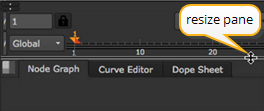
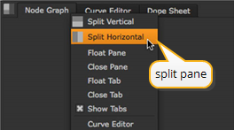
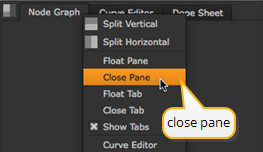
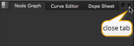

核武器 为您提供了几个自定义窗口布局的选项。你该认领你的副本了 核武器 让它成为你自己的!你不需要为这节课定制布局，但是为什么现在不试试你自己的个人娱乐呢？以下是一些可以重新组织窗口布局的事情:
• 在窗格之间拖动分隔线以更改窗格的大小。
|
 |
| 调整窗格的大小。 |
• 要划分窗格，请单击 “内容” 菜单 (每个窗格左上角的方框)，然后选择 垂直分割 或 水平分割 .
|
 |
| 拆分窗格。 |
• 要放弃窗格，请单击内容菜单并选择 关闭窗格 .
|
 |
| 关闭窗格。 |
• 要将新的选项卡式页面添加到窗格中，请单击 “内容” 菜单，然后选择内容选项之一，如 新观众 或 曲线编辑器 .
• 点击标签内的 “x” 以丢弃标签页面。
|
 |
| 关闭选项卡。 |
• 要移动标签页，请将该标签页拖到主窗口内的另一个窗格中。
• 要将页面作为浮动窗口撕掉，请将标签拖到主窗口边框之外，或者简单地将其拖动 Ctrl 点击 (Mac 用户) Cmd 单击标签名称上的)。
• 将浮动窗口拖到主窗口内的窗格中，将其转换为选项卡式页面。
• 从菜单栏中选择 工作区> 保存工作区 保存当前布局。选择 工作区> 恢复工作区 x 应用以前保存的布局。
|
|